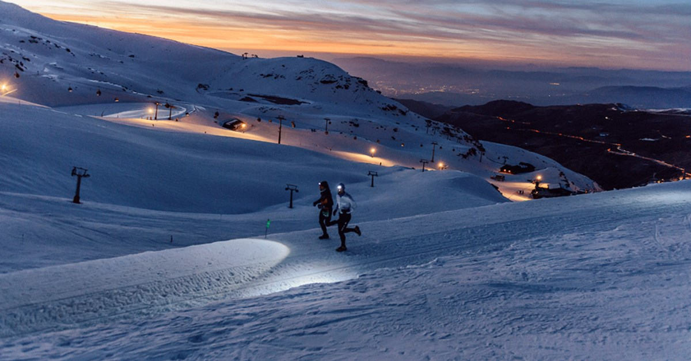
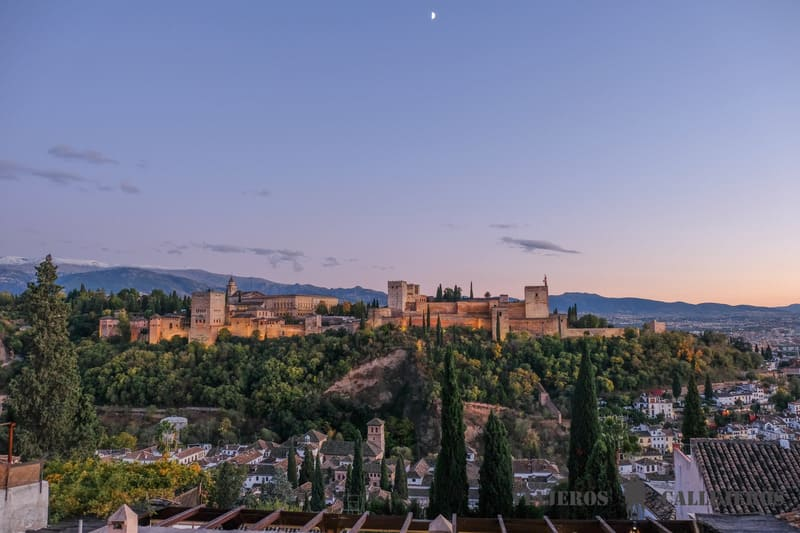

LA ALHAMBRA
Un lugar para visitar
La visita a la Alhambra incluye los Palacios Nazaríes, la Alcazaba y el Generalife, si compras la Entrada General. Eso sería el conjunto monumental completo. Sin embargo, con la entrada Generalife podrás visitar la Alcazaba y el Palacio del Generalife con sus jardines, pero no los Palacios Nazaríes.

Podemos ver la Alhambra y Sierra Nevada al fondo.
Sierra Nevada
Un lugar para visitar
La Estación de Esquí y Montaña de Sierra Nevada está situada en el Parque Nacional de Sierra Nevada, en el Sistema Penibético, en los términos municipales de Monachil y de Dílar. Fue conocida durante sus primeros años como Estación de Esquí Solynieve, nombre ya en desuso.

Podemos ver 2 personas corriendo por la nieve mientras anocheze.
Mirador de San Nicolás
Un lugar para visitar
Ubicado en la parte alta del barrio de Albaicín, el Mirador de San Nicolás es el más concurrido de Granada por tener las mejores vistas de la Alhambra con las montañas nevadas de Sierra Nevada de fondo.
El mejor momento para llegar al mirador es un poco antes del atardecer para sentarte en el muro y esperar la puesta de sol, mientras la ciudad se va iluminando.

Podemos ver la Alhambra con Sierra Nevada de fondo